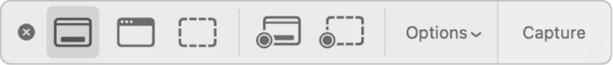

@slav.qa / qa_soft / screenshot
на macos есть встроенный инструмент для создания скриншотов и записи экрана:
💡 по нажатию shift + command + 5, откроется панель инструментов с возможностью выбора записи экрана
